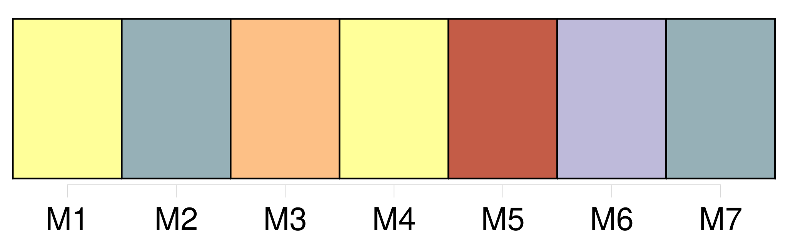
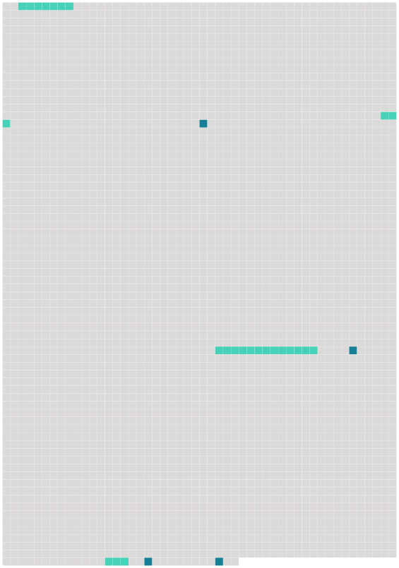

Longueur nb maillons : 8 mentions |
 |
» [29 phrases]
[Tous les Allemands] attendaient, debout, avec la figure souriante d'une curiosité enfantine ; et, dès que l'explosion eut secoué le château, [ils] se précipitèrent ensemble. [43 phrases]
» [47 phrases] Alors [Fritz et Otto] dégainèrent et [voulurent] massacrer les femmes, qui se traînaient à [leurs] genoux. |
 |
Il est possible de télécharger la ressource sur la page Ortolang |
Si vous avez des questions ou vous voyez des erreurs, merci d'envoyer un mail à silvia.federzoni89@gmail.com |